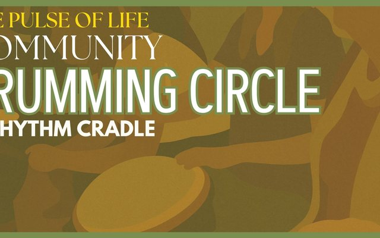

Earth Harmony
Toolbox
Songs, rhythms and practices to carry the work home. Growing every month.
Start here
15-minute onboarding
Optional, for the drive over
▶ Listen · 15 minStory
Sensitivity & Stimulation
What’s best for you?
▶ Watch · 8½ min
Voice
The Power of Humming
The simplest way to settle your nervous system
▶ Watch · 8 min
Voice
Falling in Love with Your Own Voice
Why it’s easier to love someone else’s
▶ Watch · 2 min
Body
Antler Twist
A 2-minute fascia release
▶ Watch · 2 min
Playlist
World Rhythms #1
Music Medicine
▶ Listen
Sing-along
Everyday Sing-Along: The Thank You Song
An everyday song of gratitude
▶ Sing · 3 minPrayer
Prayer for the Love Denied
A prayer for healing trauma on Earth
▶ Watch
Song
Manifesto
Musical medicine, by Nahko & Medicine for the People
▶ WatchEarth Harmony Sound & Wellness · Edmonton